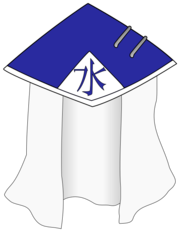

O Mizukage (水影, Literalmente significa "Sombra da Água") é o Kage de Kirigakure, um título concedido ao líder da aldeia. Houveram seis Mizukage até agora e são reconhecidos como o mais fortes shinobi na história da vila.
O cargo Mizukage foi criado logo após a formação de Kirigakure por Byakuren, o fundador da aldeia, sendo no anime o quarto dos Cinco Kage a surgir.[1] A posição é dada normalmente a pessoa mais forte na aldeia, independentemente de considerações tais como a idade.
Ao longo da história, a palavra do Mizukage tem influência sobre todas as questões políticas e militares que se apresentem em relação à Kiri e seus habitantes, sendo que cada um dos quatro primeiros líderes tiveram seus governos principalmente marcados pelo forte sigilo, politica interna severa e interação limitada com as outras aldeias. Não fora até o reinado da Quinta Mizukage que a governança tradicional da posição iria sofrer uma reforma ao qual restabeleceria relações diplomáticas com a outras aldeias.[3] O edifício do Mizukage onde trabalha é o maior marco e mais amplo em Kirigakure, tendo o kanji para "água" (水, Mizu) sobre ele.
Byakuren (白連, Byakuren) foi o Primeiro Mizukage (初代水影, Shodai Mizukage; Literalmente significa "Fundador ou Primeira Sombra da Água") que fundou Kirigakure no País da Água.
Gengetsu Hōzuki (鬼灯幻月, Hōzuki Gengetsu) foi o Segundo Mizukage (二代目水影, Nidaime Mizukage; Literalmente significa "Segunda Sombra da Água") de Kirigakure. Ele também era um membro do Clã Hōzuki.
O Terceiro Mizukage (三代目水影, Sandaime Mizukage; Literalmente significa "Terceira Sombra da Água") foi o líder de Kirigakure.
Yagura Karatachi (枸橘やぐら, Karatachi Yagura) foi o Jinchūriki de Isobu, o Três-Caudas e o Quarto Mizukage (四代目水影, Yondaime Mizukage; Literalmente significa "Quarta Sombra da Água") de Kirigakure. Quando o Três-Caudas foi capturado pela Akatsuki, não tinha hospedeiro e vagava em estado selvagem. Ele era controlado por Tobi, que poderia ser chamado de "real" Quarto Mizukage.
Mei Terumī (照美メイ, Terumī Mei) foi a Quinta Mizukage (五代目水影, Godaime Mizukage; Literalmente significa "Quinta Sombra da Água")[4] de Kirigakure. Após o fim do reinado terrível de Yagura, ela se tornou Mizukage e trabalhou incansavelmente para recriar relações diplomáticas com outras aldeias, bem como mexeu com as políticas internas de reforma.
Chōjūrō (長十郎, Chōjūrō) é um dos da última geração dos Sete Espadachins Ninja da Névoa de Kirigakure.[6] Mais tarde, ele se torna o Sexto Mizukage (六代目水影, Rokudaime Mizukage; Literalmente significa "Sexta Sombra da Água").